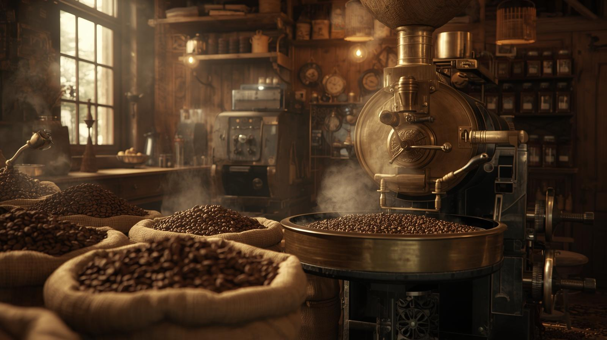

Brew & Bloom began in 2026 with a simple idea: coffee should bring people together. What started as a small neighborhood café quickly became a gathering place for students, artists, and early risers looking for their perfect cup.
We believe great coffee starts long before it reaches the cup. That’s why we carefully select ethically sourced beans from farms around the world and roast them to highlight their natural flavors.
Every drink we make is crafted with attention and care. Whether you’re stopping in for a quick espresso or staying to relax with friends, our goal is to make every visit feel warm and welcoming.
Quality Beans – ethically sourced and roasted for balanced flavor
Sustainability – supporting responsible farming and roasting practices
Community – creating a welcoming space where people can connect